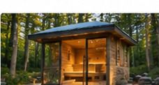
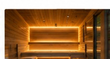
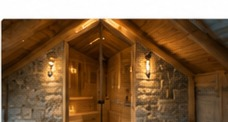
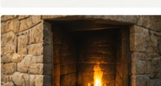
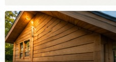
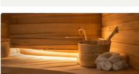

Indoor sauna
A private retreat inside
Bring the ritual of a sauna into a bathroom suite, basement, wellness room or unused interior space. We plan the enclosure, ventilation, moisture control and safe heater clearances.
Indoor comfort. Outdoor escape. A place to unwind in every season.
Discuss Your Project ↗From intimate indoor sauna conversions to standalone outdoor retreats and custom wellness additions, explore ways to create a warm, welcoming space that suits your home and your routine. Wood, brick and natural stone can all play a role in a considered design.

Bring the ritual of a sauna into a bathroom suite, basement, wellness room or unused interior space. We plan the enclosure, ventilation, moisture control and safe heater clearances.

A freestanding backyard sauna becomes an inviting destination after a cold day. Consider snow access, drainage, weather-resistant materials, privacy and a sheltered cooling-off area.

Brick surrounds, natural stone details and masonry-inspired finishes create a grounded contrast to warm timber interiors, subject to appropriate heat and moisture detailing.

Convert a suitable storage room, basement corner or part of a larger renovation into a dedicated sauna, with careful evaluation of electrical capacity and building conditions.

An attached wellness addition can combine a sauna with a shower, changing area and relaxation space, designed to complement the architecture of the home.

After a demanding workday or during a quiet weekend, a well-designed sauna offers a comfortable setting for relaxation, recovery routines and time away from screens.
Tell us about your space, materials and goals. We can discuss practical options for your property and the next steps in planning.
Contact Oakwaters ↗